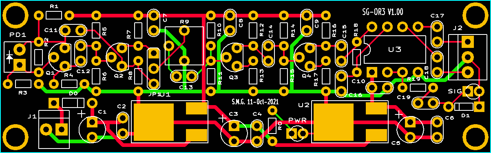
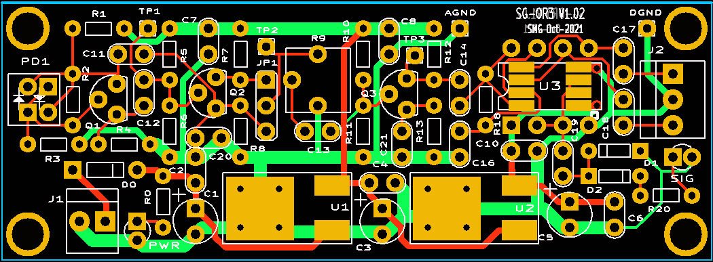
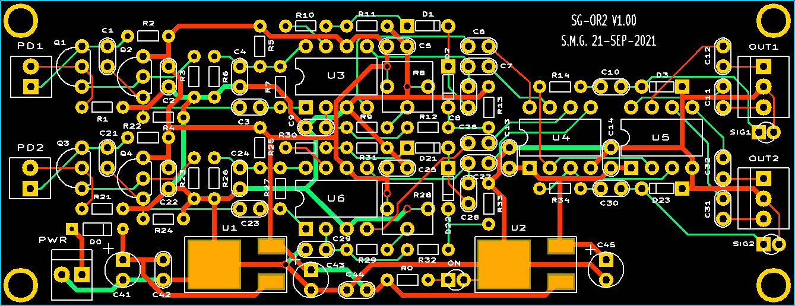

Copyright © 1994-2021
Sam Goldwasser
--- All Rights Reserved ---
UNDER CONSTRUCTION
A primary goal is for these to be available in kit form and easily assembled without a microscope or SMT equipment. And there will eventually be detailed Heathkit™-style step-by-step assembly instructions.
Originally, it was thought that the Teletrac reference receiver could be enhanced to be suitable as a general purpose optical receiver as it is very simple. But SG-OR1 turned out to be more trouble than it was worth. The first new design was SG-DOR1, a dual receiver on a single PCB using amplifiers with with automatic gain control so no adjustments would ever be needed. But the goal has been scaled for several reasons (though SG-DOR1 is described at the end of this manual). One issue has been oscillation of the AGC amp when the input signal is too low. This may be resolved eventually, probably by a better layout on a 4 layer PCB. But another is that having 2 channels on one PCB is less than optimal as extending the wiring to either or both PDs does add noise and RFI pickup even with shielded cable. So the most likely one to be released initially (or forever), will be SG-OR3.

It's called "SG-OR3" because the dual channel version (velow) was actually originally OR2. SG-OR1 was an aborted attempt to adapt the Teletrac reference receiver design for general purpose use but that was less than totally successful as its sensitivity was too low. Got that? ;-) All components are through-hole except for the 78M09 and 78M05 voltage regulators, but they are trivial to solder. On later versions, the conversion to RS422 which currently uses a SN75179B receiver/transmitter pair in an 8 pin DIP may become an SOIC8 due to availability and cost considerations. Soldering a single SOIC8 SMT package isn't terrible. (You will never have to solder a zillion itty-bitty chip resistors and capacitors!) The sensitivity is below 10 µW out of the laser at 2 MHz (which is the typical maximum MEAS frequency for the DIY kits) with two of the transistors set up as a buffer and the other two as an amplifier with a gain of around 100. Where the beam power is above 100 µW, the third transistor stage may be bypassed. And it may be configured with another factor of ~10 of gain with minor changes to the first stage, but it's not clear how stable that would be. The only need for higher sensitivity may be to monitor REF via the waste beam from the laser tube, which could be below 10 µW.
The current status is that the PCB (above) works with a sensitivity below 2 µW at 2 MHz, but oscillates with no signal. :( ;-) Actually, it doesn't appear to be an oscillation but rather pickup of a stray ~1 MHz signal out of the air.
With only the first two stages, it has a sensitivity of under 5 µW at 2 MHz and under 10 µW at 3 MHz with no oscillation. These values should be quite acceptable for any of the DIY kits. With 3 stages popilated, the performance is just about the same before the noise pickup kicks in.
So the plan is for the first released version to have 3 stages though 2 should suffice.
Here is the revised PCB layout:

It's a bit smaller - 1x2.75" compared to 1x3.2" - and easier to assemble. And the pattern for the SMT version of the RS422 transmitter/receiver pair has been added. So either type can be installed.
Stay tuned.

The PhotoDiodes (PDs) may be mounted on the PCB, or remoted using coax up to at least 1 foot away. Any small area silicon PD should be satisfactory, though the default are the ones included in the various kits. The required Linear Polarizer (LP) can be a piece of self adhesive LP or CP sheet stuck directly on PD. Or if used with a fiber, the LP should be at the fiber input and the LP on the PD would be omitted.
The design is based on a simplified version of the 10780 with a discrete front-end but then uses a high bandwidth integrated TL026 amplifier with AGC or TL592B adjustable gain amplifier, and UA9638/UA9837 pair to convert to two channels of RS422. Where only a single channel is needed, the front-end parts can be omitted for the second channel. On-board regulators provide 9 VDC for the analog circuitry and 5 VDC for the UA9638/UA9837.
The usable sensitivity of the soldered bread-boarded prototype using a random JFET found in a junk cabinet is from a laser power of less than 15 µW to at least 1 mW. With the correct part, it the sensetivity should be better. So it should be suitable for use with the waste beam for the REF signal and the maximum power available from almost any Zeeman HeNe laser. The upper limit should easily cover anything needed for the types of two frequency lasers found in either the DIY DMS kit or Hobby Special displacement measuring systems.
All parts are through-hole except for the LM78M09 and LM78M05 three-terminal regulators, simply because the SMT version is smaller yet still easy to solder. If this ever becomes a kit, Heathkit™-style step-by-step instructions will be provided.
SG-DOR1 is on hold pending completion of SG-OR3.